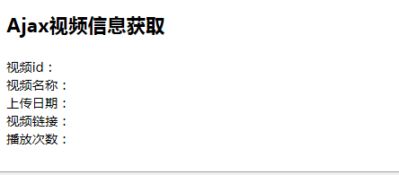
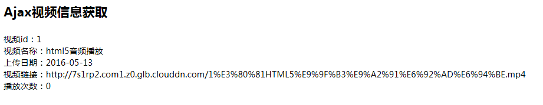
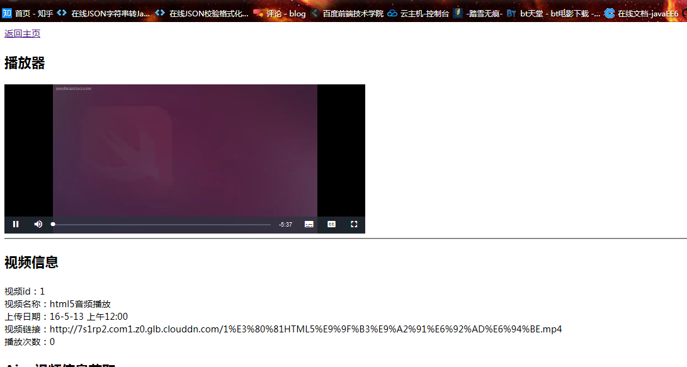

最近在做关于动态视频播放的功能，同时还要对IOS进行同步的视频播放接口的开发。我给它起了一很中二的名字DrangonAlpha1
IOS这块儿直接通过Jersey开发的RESTful接口输出json进行开发了。比较困惑的地方在于浏览器端如何进行视频的动态播放。和成员进行讨论之后选择了两个方案进行实现，分别是Ajax方式解析json以及通过后台传值，路由导向的方式进行响应。本文分两部分进行陈述。
后台生成的json串如下：
{
"messages": [
{
"date": "2016-05-13",
"video_id": 1,
"video_name": "html5音频播放",
"video_playedtime": 0,
"video_url": "http://7s1rp2.com1.z0.glb.clouddn.com/1%E3%80%81HTML5%E9%9F%B3%E9%A2%91%E6%92%AD%E6%94%BE.mp4"
}
]
}
在前端进行ajax解析，目前没能顺利解决跨域的问题，在同域内解析成功。
代码如下：
function getVideoDatas() {
var videoMsg = "";
$.ajax({
type:"get",
url:"http://localhost:8080/DragonAlpha01/webapi/videos/all",
async:true,
data:videoMsg,
dataType:"json",
success:function(videoMsg) {
//取到json对象
console.log(videoMsg);
//转换为jsons字符串
var jsonStr = JSON.stringify(videoMsg);
console.log(jsonStr);
//alert(videoMsg.messages[0].video_name + " " + videoMsg.messages[0].date);
//分别取出各个数据
var date = videoMsg.messages[0].date;
var video_id = videoMsg.messages[0].video_id;
var video_name = videoMsg.messages[0].video_name;
var video_url = videoMsg.messages[0].video_url;
var video_playedtime = videoMsg.messages[0].video_playedtime;
//装载数据
$(".video_id").html(video_id);
$(".date").html(date);
$(".video_name").html(video_name);
$(".video_url").html(video_url);
$(".video_playedtime").html(video_playedtime);
//为视频添加url
$("#player #mp4").src = video_url;
}
});
}
使用了jQuery的ajax方式，访问json输出的接口，成功后执行回调函数，拿到json对象对其进行层层脱壳即可拿到具体的数据。


这种方式是基于异步数据加载机制的，做出来之后才发现和需求不相符，由于异步的原因，数据的加载和界面的渲染不一致，不是我们想要的结果，于是留作局部刷新的方案。不在视频播放中使用。
这里是本文的重头戏。
由于直接访问页面(视图)需要向后台发送请求，后台返回需要的数据，比如视频链接方能实现视频播放，但是就目前技术而言需要在页面中嵌入大量的scriplet脚本段，坏味道太重了。而且就编码本身而言也是不适合的。我们是针对接口和访问编程，而不是针对某一个具体的视图编程的。
因此想到了使用servlet进行路由的方式进行开发，这种方式和Struts2的Action，SpringMVC中的controller的思路很像。
我们通过访问一个具体的路由请求，该处理器(位于业务层)接收请求进行处理，它去访问DAO层，组装数据然后返回一个具体的视图。更符合请求响应机制的开发方式。
不多说上代码了。
protected void doGet(HttpServletRequest request, HttpServletResponse response) throws ServletException, IOException {
request.setCharacterEncoding("UTF-8");
response.setCharacterEncoding("UTF-8");
response.setContentType("text/html;charset=UTF-8");
response.addHeader("Access-Control-Allow-Origin", "*");
//获取vedio_id参数（李鹏鹏）
int vedio_id = Integer.parseInt(request.getParameter("videoid"));
//建立数据库连接获取数据
..........
try {
pstmt = connection.prepareStatement(sql);
pstmt.setInt(1, vedio_id);
ResultSet rs = pstmt.executeQuery();
while (rs.next()) {
int idTemp = rs.getInt("video_id");
String video_nameTemp = rs.getString("video_name");
Date dateTemp = rs.getDate("video_date");
String urlTemp = rs.getString("video_url");
int played_timeTemp = rs.getInt("video_playedtime");
HttpSession session = request.getSession();
VideoInfoBean videoMsg = new VideoInfoBean(idTemp, video_nameTemp, dateTemp, urlTemp, played_timeTemp);
session.setAttribute("video_Msg", videoMsg);
System.out.println(session.getAttribute("video_url"));
.......
request.getRequestDispatcher("VideoPlayerList.jsp").forward(request, response);
}
<div class="video_player">
<video id="player" class="video-js vjs-default-skin vjs-big-play-centered" controls preload="none" width="640" height="264" poster="http://video-js.zencoder.com/oceans-clip.png" data-setup="{}">
<source id="mp4" src="<%=video_url %>"/>
<source src="<%=video_url %>" type='video/webm' />
</video>
</div>
视频id：<span><%=String.valueOf(video_id)%></span><br/>
视频名称：<span><%=video_name %></span><br/>
上传日期：<span><%=new SimpleDateFormat().format(date) %></span><br/>
视频链接：<span><%=video_url %></span><br/>
播放次数：<span><%=String.valueOf(played_time) %></span><br/>

刚写完一个基于REST和ajax方式的视频播放demo，猛然理解了一些MVC的思想。我们请求的时候其实不是针对某个页面，即视图（view），
而是对某一个接口或者控制器也可以理解为路由发起请（controller）。 然后服务层（BIZ）通过数据访问层（DAO）从模型层取到需要的数据并组装，以json返回到前台供客户端解析，
或者直接以路由分发的形式返回对应的带有响应数据的视图。也就是说我们不是针对视图编程，而是针对某个请求编程，
这个请求导致了某个具体的视图。用户也不是针对某个网页发起请求，只是他的请求导致返回了某个具体结果页面。
然后突然发现这不就是struts2的action和SpringMVC的controller的原理吗？